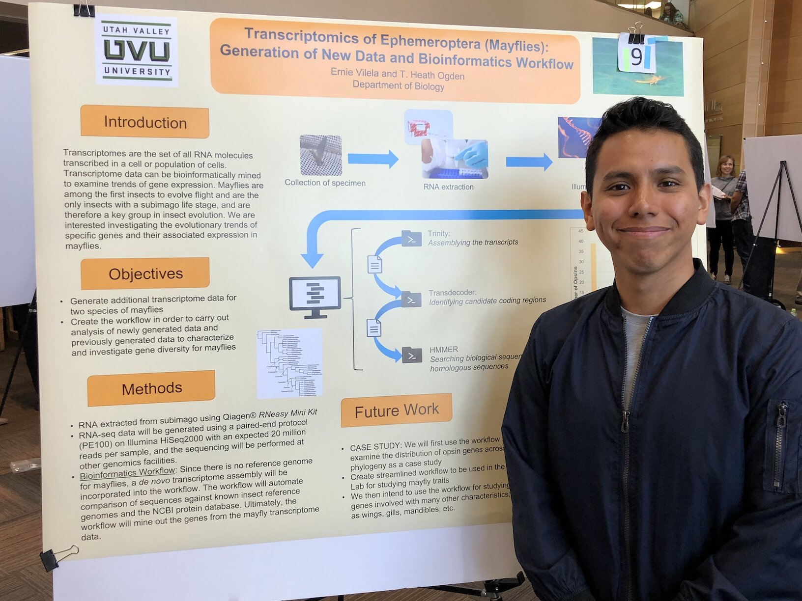

Research
As an undergraduate student, I was able to be part of different research projects and to materialize those in different ways. The following is a summary of my research at different stages of completion:
Publications
2023
In Final Preparations
- Zahn, G., Morelli, M., Hickman, K., Leon, J., *Vilela, E., Aimone, B., Caldwell, J., & Pischoff, P. (2023). Cryptic dispersal barriers affect some host-associated marine bacteria across Wallace's Line. Journal of Biogeography. - To be submitted to the Journal of Biogeography
2022
In Review
- Contributions to an Insect Survey of Capitol Reef National Park, Utah Jensen, JB, *Vilela, EB, Newell, N, Erickson, R, and Ogden, TH - Submitted for revision to the Great Basin Naturalist
Bioinformatic Contributions
2023
- *Vilela, E., Ogden TH. (2023) A Bioinformatic Workflow for Transcriptome Analysis of Opsin genes in Ephemeroptera (Mayflies). https://github.com/ErnieVc/Opsin_Transcriptome_Workflow_Methods - Link to GitHub Repository
- Zahn, G., Morelli, M., Hickman, K., Leon, J., *Vilela, E., Aimone, B., Caldwell, J., & Pischoff, P. (2023). gzahn/syringodium_bacteria: Bacterial traits added (v0.0.2). Zenodo. https://doi.org/10.5281/ZENODO.7729693 - Link to Zenodo Repository
Poster Presentations
2022
- Cancer Genomics: A Review. *Vilela, EB, and Hjelmen, CE. - Utah Valley University, Orem UT
- Analysis of Transcriptome Data of Ephemeroptera (Mayflies): Generation of New Data and Bioinformatics Workflow. *Vilela, EB, and Ogden, TH - Utah Conference of Undergraduate Research (UCUR), Saint George, UT
2021
- A Bioinformatic Workflow for Genome Assembly from Anchored Hybrid Enrichment Raw Sequence Data of Ephemeroptera (Mayflies) Millar, TD, *Vilela, EB, and Ogden, TH - Entomological Society of America, Denver, CO
2020
- Transcriptomics of Ephemeroptera (Mayflies): Generation of New Data and Bioinformatics Workflow. *Vilela, EB, Seal, I and Ogden, TH - Utah Conference of Undergraduate Research (UCUR), Logan, UT 
- Insect Biodiversity Sampling Of Capitol Reef National Park, Utah. *Vilela, EB, Newell, N, and Ogden, TH - Utah Valley University Showcase, Orem, UT
2019
- Are Perissodactyla and Cetartiodactyla Monophyletic? Baccus A, Mullen, C, and *Vilela, EB - Utah Valley University Showcase, Orem, UT